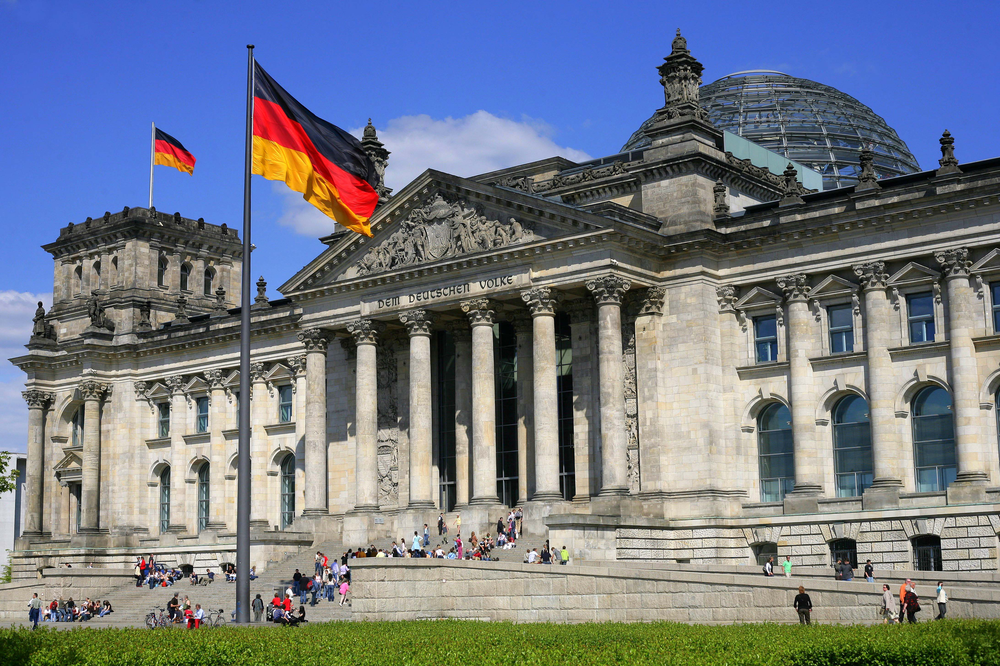
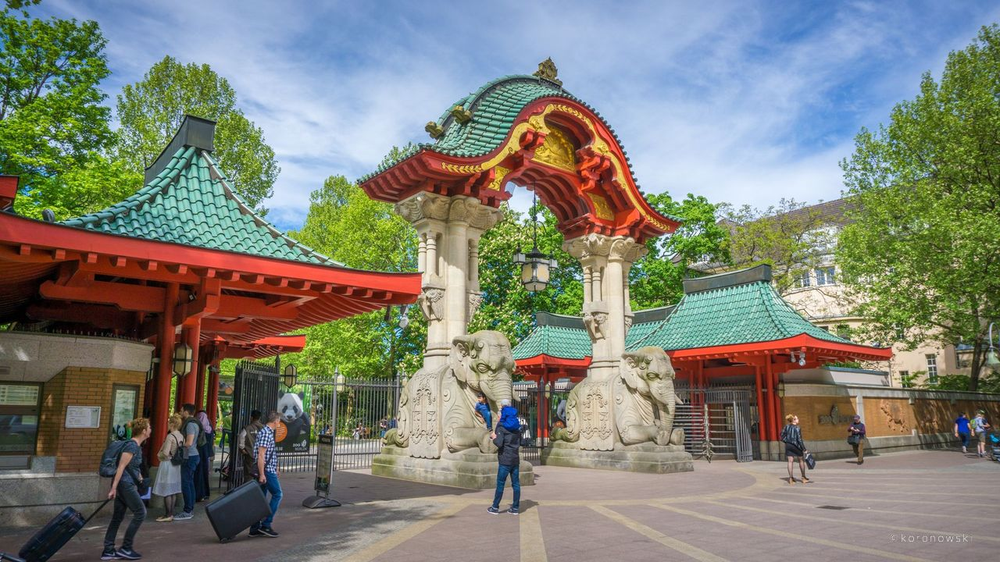

|
Branderburška kapija
|
Brandenburška kapija (njem: Brandenburger Tor) je trijumfalna kapija, simbol Berlina.
Izgrađena je kao posveta miru 1791. godine, u klasičnom stilu sa 12 stubova. Brandenburška
kapija leži na otvorenom i prostranom Pariskom trgu (Pariser Platz) i jedini je spomenik
koji je ostao netaknut u savezničkom bombardovanju Berlina na kraju Drugog svetskog
rata.
|
|
|
Reichstag
|
Rajhstag (njem. Reichstag) je zgrada u Berlinu izgrađena da bude dom Rajhstaga, prve
skupštine Njemačkog carstva. Otvorena je 1894. i u njoj je zasijedala skupština sve
do 1933, kada je teško oštećena u požaru. Rajhstag je opet postao sjedište njemačke
skupštine 1999, nakon obnove koju je sproveo arhitekta Norman Foster. |
>
|
|
Televizijski toranj
|
Televizijski toranj Berlin (Fernsehturm Berlin) je televizijski toranj u središtu grada.
Izgrađen u blizini Alexanderplatza 1969. nakon 4 godine gradnje i postao jedan od
simbola grada. Visok je 368m i zbog izuzetne visine vidljiv je u cijelom središtu
i nekim drugim dijelovima grada. Najviša je građevina u Njemačkoj i druga po veličini
u Evropi. |
|
|
Berlinska katedrala
|
Berlinska katedrala najveća je gradska crkva i sjedište protestantske crkve u Njemačkoj.
Njeni obrisi s dominantnom kupolom jedan su od najprepoznatljivijih berlinskih simbola.
1894. položen je kamen temeljac za izgradnju nove katedrale, a gradnja katedrale
s impresivnom 114 metara visokom kupolom dovršena je 1905. godine.
|
|
|
Ostrvo muzeja
|
Мuzejsko ostrvo (nem. Museumsinsel) u Berlinu, je sjeverni dio ostrva na rijeci Špreja,
u gradskom centru. Na njemu se nalaze neki od najznačajnijih svijetskih muzeja. Muzeje
su gradili pruski kraljevi, a njihove bogate kolekcije umjetnina i arheologije postale
su javno dobro 1918. Tu se nalaze: Stari muzej, Novi muzej, Stara Nacionalna galerija,
Muzej Bode i najnoviji Pergamonski muzej. |
|
|
Potsdamer plac
|
Potsdamer plac ili Potstadmski trg (nemački: Potsdamer Platz) je važan trg i saobraćajni
čvor Berlina. Ime je dobio po Potsdamu, gradu nadomak Berlina. Na Potsdamer placu
se nalazi nekoliko bioskopa, filmska akademija i muzej filma. Tu se održava i Berlinski
filmski festival.
|
|
|
Berlinski zoološki vrt
|
Berlinski zoološki vrt, stariji od dva zoo-vrta, smješten u centru grada, je osnovan
1844. godine. Smatra se za najbogatiju zbirku različitih živih vrsta na svijetu i
posjeduje više od 13.000 životinja. Između ostalog, bio je dom polarnom medvedu Knutu,
koji je u njemu i rođen, decembra 2006.
|

|